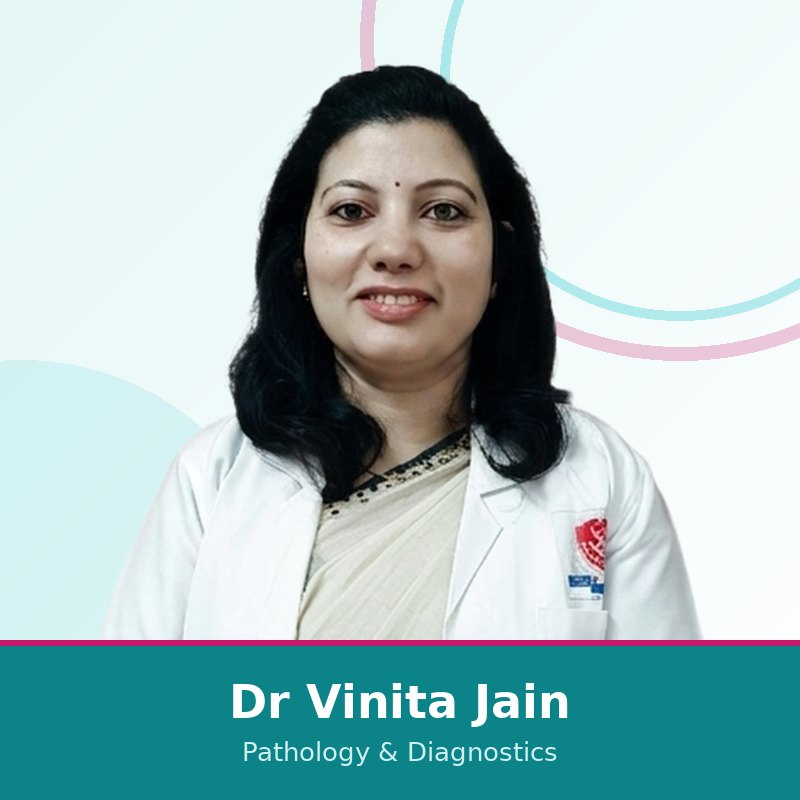

R N Multispeciality Hospital provides in-house pathology and diagnostic support in Nirman Nagar, Jaipur for outpatient, emergency and admitted patients.


R N Multispeciality Hospital has an in-house laboratory, X-ray, sonography, colour Doppler and ECG.
Dr Vinita Jain leads pathology and diagnostic laboratory services.
Yes. Diagnostics support outpatient, emergency and admitted patients.
Call 0141 239 0320 or message on WhatsApp.
Send a WhatsApp request or call 0141 239 0320. Treatment suitability and insurance approval depend on doctor evaluation, policy terms and TPA rules.